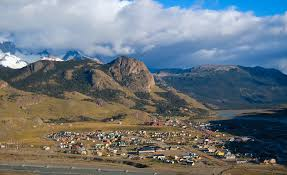

¿Cuando ir?
La temporada alta va de Noviembre a Marzo. Durante estos meses el clima es mas benigno, los dias son mas largos y hay mayor probabilidad de encontrar el Fitz Roy despejado. EL pico es en Enero y Febrero. Si preferis menos gente, octubre y abril son meses excelentes con clima todavia aceptable para el trekking

¿Cómo llegar?
La manera más común es en ómnibus desde El Calafate, el aeropuerto más cercano a la zona. El viaje dura aproximadamente 3 horas por la Ruta Nacional 40 y la Ruta Provincial 23. Hay varias empresas de transporte con salidas diarias durante la temporada turística.
También es posible llegar en automóvil, una opción especialmente recomendable si venís desde otra zona de la Patagonia. La ruta ofrece paisajes espectaculares de la estepa durante todo el trayecto.
¿Dónde alojarse?
El Chaltén cuenta con hostels, camping, hosterías y pequeños hoteles boutique. Al ser un pueblo pequeño, todas las opciones están a pocos minutos caminando de los puntos de partida de los senderos. Se recomienda reservar con anticipación durante la temporada alta, ya que la demanda suele superar la oferta disponible.
Datos útiles
El Chaltén no tiene cajero automático confiable durante toda la temporada, por lo que se recomienda llevar efectivo suficiente desde El Calafate. La conectividad de telefonía móvil es limitada dentro del pueblo y prácticamente inexistente en los senderos. El pueblo cuenta con supermercados, farmacias y tiendas de equipamiento outdoor para cubrir necesidades básicas.